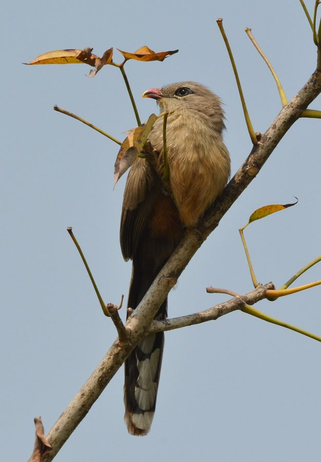

सिरकीर मालकोहाSirkeer Malkoha
Taccocua leschenaultii · Cuculidae · BRD-0332

- Scientific name वैज्ञानिक नाम
- Taccocua leschenaultii Lesson, 1830
- Family कुल
- Cuculidae
- Hindi हिंदी
- सिरकीर मालकोहा
- Local names स्थानीय नाम
- sirkeer malkoha, jangli tota
- Status here यहाँ की स्थिति
- native
- Movement आवागमन
- Resident, here all year
- Known from कहाँ दर्ज
- Others have published records from the wider Awadh–Purvanchal plain, none yet from Basti–Ayodhya अवध–पूर्वांचल से दूसरों के प्रकाशित अभिलेख, बस्ती–अयोध्या से अभी नहीं
- IUCN IUCN
- LC
- Review समीक्षा
- not yet reviewed
When to look कब देखें
Present all year. साल भर मौजूद।
Tell it apart from इनसे अलग पहचानें
सिरकीर मालकोहा / Sirkeer Malkoha
Taccocua leschenaultii Lesson, 1830 — Cuculidae
सिरकीर मालकोहा — तराई के जंगलों, झाड़ियों और बीहड़ों में रहने वाला जमीन पर चलने वाला कोयल कुल का पक्षी है। इसकी चोंच तोते की तरह घुमावदार और चमकीली चेरी जैसी लाल होती है जिसकी नोक पीली होती है। इसके शरीर का रंग मटमैला भूरा होता है और लंबी पूंछ के किनारों पर चौड़े सफेद धब्बे होते हैं। अन्य कोयल प्रजातियों के विपरीत यह अपने अंडे दूसरे पक्षियों के घोंसले में नहीं रखती, बल्कि झाड़ियों में खुद टहनियों का कटोरे जैसा घोंसला बनाकर अंडे देती है। यह जमीन पर दौड़कर घास के टिड्डों, भृंगों और जंगली फलों को खाती है।
Quick Identification त्वरित पहचान
| Feature | Description |
|---|---|
| Habit | Terrestrial, non-parasitic cuckoo of scrub, broken hills, and cane-brakes |
| Size | Large, slender terrestrial cuckoo with a very long graduated tail |
| Bill | Stout, highly arched, bright cherry-red bill tipped with pale yellow |
| Plumage | Earthy sand-brown above with subtle satiny sheen on wings and tail |
| Head & Throat | Spiny, stiff, glistening black feather-shafts on crown, nape, and throat |
| Tail | Very long, graduated dark tail with broad white tips to outer feathers |
| Flight | Poor flier; runs with great agility through thickest thorn-bush and cane |
Field tip: Scan low thorn bushes, ravine scrub, and bamboo tangles. When alarmed, it rarely takes wing, preferring to run rapidly along the ground with astonishing agility through dense thorny cover.
हिंदी:
यह एक बड़ा भूरा पक्षी है जिसकी भारी चोंच चेरी जैसी लाल और नोक से पीली होती है।
इसकी लंबी पूंछ पर सफेद किनारे होते हैं और सिर तथा गले पर कांटेदार काले पंख दिखाई देते हैं।
यह खतरे के समय उड़ने के बजाय झाड़ियों के बीच जमीन पर बहुत तेज दौड़ता है।
Morphology आकारिकी
Measurements as given by Baker (1927):
| Measurement | Range |
|---|---|
| Wing and Culmen | Wing 145 to 169 mm.; culmen about 24 to 26 mm. (Baker 1927 as Taccocua leschenaulti sirkee) |
Baker (1927, p. 187) recorded wing 145 to 169 mm and culmen about 24 to 26 mm for the paler race sirkee. The upperparts are earthy sandy-brown, exhibiting a satiny greenish sheen on the wings and tail (Baker 1927, p. 185). The feathers of the forehead, crown, neck, and upper back have stiff, bristly black shafts that project noticeably beyond the feather webs.
The eye is surrounded by a row of coarse black bristles (Baker 1927, p. 185). A narrow whitish line runs above the lores. The graduated tail is dark blackish-brown, and the outer rectrices are tipped with broad, conspicuous white spots. The chin, throat, and breast are fulvous, streaked with bristly black shaft-lines. The lower plumage is darker and more rufous in the submontane race affinis (Baker 1927, p. 188).
The bill is stout, curved, and deep cherry-red, with the tip pale yellowish and the culmen base darker. The irises vary from reddish-brown to crimson. The legs and feet are plumbeous or slaty-brown (Baker 1927, p. 186).
Vocalisations. A generally silent bird. When frightened it utters a short harsh cry, and while foraging it produces a low chuckling note inaudible a few yards away (Baker 1927, p. 187).
हिंदी:
इसके पंखों की लंबाई 145 से 169 मिमी और चोंच 24 से 26 मिमी होती है (बेकर 1927)।
इसकी चोंच गहरी लाल और सिरा पीला होता है, तथा लंबी पूंछ के सिरों पर सफेद चकत्ते होते हैं।
यह आमतौर पर शांत रहता है और डरने पर एक तीखी आवाज तथा चरते समय हल्की आवाज निकालता है।
Behaviour & Ecology व्यवहार और पारिस्थितिकी
Taccocua leschenaultii frequents forest but prefers scrub-jungle, secondary growth, and mixed bamboo- and scrub-jungle (Baker 1927, p. 186). It hunts both on the ground and in bushes and trees.
They are poor fliers and will not take to flight unless forced to desert the piece of jungle they occupy, but they are very expert in finding their way on foot through the thickest of jungle or thorniest of cane-brakes (Baker 1927, p. 187). It is found in the plains where the country is at all broken and in the hills up to about 6,000 feet.
हिंदी:
यह पक्षी जंगलों, झाड़ियों और बांस के झुरमुटों में रहना पसंद करता है।
इसकी उड़ान कमजोर होती है और यह तब तक नहीं उड़ता जब तक मजबूर न किया जाए।
यह घनी कंटीली झाड़ियों और बेंत के झुरमुटों में पैरों से बहुत फुर्ती से रास्ता निकालता है।
Life Cycle / Phenology जीवन चक्र
The nesting habits are non-parasitic. It builds an open, shallow, saucer-shaped nest of leaves and twigs, plentifully lined with green leaves, placed at low to moderate heights in saplings, creepers on bigger trees, or high bushes, generally selecting scrub-jungle mixed with trees (Baker 1927, p. 186).
Breeding has been recorded from March to August across peninsular India (Baker 1927, p. 186), while for the northern submontane race affinis the breeding months are April to July (Baker 1927, p. 188). A small clutch of eggs is laid in the saucer nest (Baker 1927, p. 186).
हिंदी:
यह कोयल दूसरों के घोंसले में अंडे नहीं देती, बल्कि झाड़ियों और पेड़ों में खुद टहनियों व पत्तों का घोंसला बनाती है।
उप-पर्वतीय तराई क्षेत्र में इसके प्रजनन के महीने अप्रैल से जुलाई तक दर्ज हैं (बेकर 1927)।
यह अपने घोंसले में अंडों का एक छोटा समूह देती है।
Host Plants or Prey आहार
The Sirkeer Malkoha feeds on insects and wild vegetation taken on the ground and in low bushes:
- Insects, feeding principally on small grasshoppers and beetles (Baker 1927, p. 187)
- Berries, seeds, and different kinds of fruits (Baker 1927, p. 187)
हिंदी:
यह जमीन और झाड़ियों पर कीड़े और फल तलाशता है:
- कीड़े, मुख्य रूप से छोटे टिड्डे और भृंग (बेकर 1927)
- जंगली बेर, बीज और विभिन्न प्रकार के फल (बेकर 1927)
Predators / Natural Enemies शत्रु
Larger raptors, owls, and small carnivores take birds of this size. No source opened for this atlas names a specific predator of this bird.
हिंदी:
बड़े शिकारी पक्षी, उल्लू और छोटे मांसाहारी इस आकार के पक्षियों का शिकार करते हैं। इस एटलस के लिए खोले गए किसी स्रोत में इस पक्षी के किसी विशिष्ट शिकारी का नाम नहीं है।
Agricultural / Human Relevance कृषि प्रासंगिकता
In Bihar, Baker (1927, p. 188) recorded that the submontane race occasionally comes into compounds and orchards. It is protected under the Wildlife (Protection) Act, 1972.
हिंदी:
बिहार में बेकर (1927) ने दर्ज किया कि यह पक्षी कभी-कभी बगीचों और अहातों में भी आ जाता है। यह वन्यजीव (संरक्षण) अधिनियम, 1972 के तहत संरक्षित है।
Expected Locally स्थानीय रूप से अपेक्षित
Not a field record. Written from published accounts for eastern Uttar Pradesh. No confirmed local sighting yet — if you have seen it, that is what the atlas needs.
अभी तक स्थानीय पुष्टि नहीं। यह विवरण प्रकाशित स्रोतों से है, किसी अवलोकन से नहीं।
Search along dry thorn scrub margins, riverine ravine edges, and bamboo thickets in the northern Terai fringe.
GBIF holds published records from the wider Awadh–Purvanchal plain, none yet from Basti–Ayodhya.
A first record would be a photograph of the bird with place and date, sent through the About page.
Distribution वितरण
Global range: Endemic to the Indian subcontinent, occurring in Pakistan, India, southern Nepal, and Bangladesh.
In India: Distributed throughout peninsular, central, and northern India in broken country, dry deciduous tracts, and foothill scrub.
In Uttar Pradesh: Recorded in the northern Terai districts including Lakhimpur Kheri, Balrampur, Shravasti, and Bahraich.
In Basti district / eastern UP: No published records from Basti or Ayodhya; known in eastern UP from the Terai forest fringes and broken foothill scrub.
हिंदी:
यह भारतीय उपमहाद्वीप में पाकिस्तान से लेकर नेपाल और भारत के मैदानी भागों में पाया जाता है।
उत्तर प्रदेश में इसके प्रकाशित रिकॉर्ड लखीमपुर खीरी, बलरामपुर, श्रावस्ती और बहराइच के तराई क्षेत्रों से हैं।
Research Questions शोध प्रश्न
- What are the seasonal foraging ratios between terrestrial grasshoppers and wild berries along forest edges in eastern UP? / पूर्वी उत्तर प्रदेश में वनों के किनारों पर सिरकीर मालकोहा के आहार में टिड्डों और जंगली फलों का अनुपात क्या रहता है?
- What tree or shrub species are preferentially selected for saucer-nest placement in northern Uttar Pradesh scrub tracts? / उत्तरी उत्तर प्रदेश की झाड़ियों में घोंसला बनाने के लिए यह पक्षी किन पेड़ों या झाड़ियों को प्राथमिकता देता है?
- How does the clearing of riparian ravines and thorn scrub affect local population persistence?
- What is the extent of home range movements between scrub jungle and agricultural crop borders during harvest periods?
- Can village naturalists document nesting success by locating non-parasitic cuckoo stick nests in village bamboo groves? (A student can record nest height and bush species from a safe distance.)
Similar Species मिलती-जुलती प्रजातियाँ
| Species | How to tell apart | हिंदी | |
|---|---|---|---|
| [[green_billed_malkoha\ | Green-billed Malkoha]] (Phaenicophaeus tristis) | Bright apple-green bill, dark slate-green body plumage, and red orbital patch; inhabits dense moist forest canopy, not dry scrub | ग्रीन-बिल्ड मालकोहा |
| [[greater_coucal\ | Greater Coucal]] (Centropus sinensis) | Deep glossy black body with bright chestnut-bay wings and ruby-red eyes; lacks the bright cherry-red bill and spiny neck shafts | महोख |
Field rule: The stout cherry-red bill with a yellow tip, sandy-brown plumage with stiff spiny shaft-streaks, and white-tipped graduated tail distinguish the Sirkeer Malkoha from coucals and other cuckoos.
हिंदी:
महोख का शरीर चमकीला काला और पंख कत्थई होते हैं, जबकि ग्रीन-बिल्ड मालकोहा की चोंच हरी होती है; सिरकीर मालकोहा की चोंच लाल व पीली और शरीर मटमैला भूरा होता है।
Taxonomy & Classification वर्गीकरण
Original description. Described by René Primevère Lesson in 1830 in Traité d'Ornithologie (vol. 1, p. 144), under the basionym Taccocua leschenaultii. The type locality is India, restricted to Kanara, Bombay.
Synonyms and historical names. Stuart Baker (1927, p. 187) treated the northern Indian bird under the name Taccocua leschenaulti sirkee, based on Centropus sirkee described by Gray in 1831.
Subspecies. Baker (1927, pp. 185–188) recognized four geographical races. While the plains of the United Provinces were placed under sirkee, Baker noted that birds from the submontane tracts north of the United Provinces are very dark and rufous and must be placed with affinis (p. 188). Submontane Terai birds of northern Uttar Pradesh belong to the submontane race affinis (Blyth, 1846).
Family and order placement. Order Cuculiformes (cuckoos); family Cuculidae (cuckoos); genus Taccocua.
IUCN status rationale. Evaluated as Least Concern (LC) by the IUCN Red List due to its extensive geographical distribution and stable population.
हिंदी:
रेने प्राइमेवेरे लेसों ने 1830 में इसका वर्णन किया था। यह कुकुलिडी (कोयल) कुल का गैर-परजीवी सदस्य है और संकटमुक्त (LC) है।
Photo Gallery फोटो गैलरी
No photos yet — add field photos to media/species/sirkeer_malkoha/ and run node scripts/sync_photos.js.
Photos needed आवश्यक फोटो
- [ ] Adult foraging on ground showing cherry-red bill and spiny neck feathers (जमीन पर आहार खोजता वयस्क)
- [ ] Profile in flight showing white tail tips and graduated tail (पूंछ के सफेद धब्बे दिखाती उड़ान)
References संदर्भ
- Lesson, R. P. (1830). Traité d'Ornithologie, ou Tableau Méthodique. Vol. 1. F. G. Levrault, Paris, p. 144 (as Taccocua leschenaultii).
- Baker, E. C. S. (1927). The Fauna of British India, Including Ceylon and Burma. Birds. Vol. 4. Taylor & Francis, London, p. 187 (as Taccocua leschenaulti sirkee).
- Ali, S. & Ripley, S. D. (1987). Compact Handbook of the Birds of India and Pakistan. Oxford University Press, New Delhi.
- Grimmett, R., Inskipp, C. & Inskipp, T. (2011). Birds of the Indian Subcontinent. 2nd ed. Christopher Helm, London.
- BirdLife International (2025). Taccocua leschenaultii. The IUCN Red List of Threatened Species 2025: e.T22684104A282308914. doi:10.2305/iucn.uk.2025-2.rlts.t22684104a282308914.en
- GBIF Occurrence Data — Taccocua leschenaultii, India (2025).
Source file: species/fauna/birds/sirkeer_malkoha.md